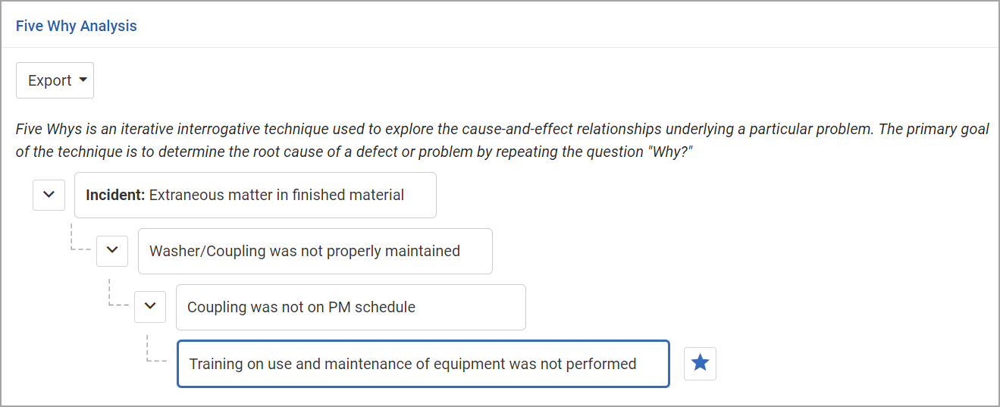

The user assigned to the nonconformance record (the “NC Assigned To”) (see Recording a Nonconformance) will be alerted at each change of status and will complete the investigation and record the root cause(s) and CAPAs as required.
When a nonconformance record is closed, all tabs become locked. You can choose Actions»Reopento unlock all tabs except CAPA and Investigation, which must be unlocked separately.
Investigation
If no investigation is required, select the No Investigations Requiredcheckbox on the Nonconformance tab and save the record. The NC status is changed to Root Cause.
If investigation is required:
On the Investigations tab click New to create an investigation record. A nonconformance may require multiple investigations. Enter the details of the investigation, including who it is Assigned To, and click Save.
To alert the Assigned Touser, choose Actions»Investigate. This user will be alerted to complete the investigation record.
Each investigation’s Assigned Touser will review the investigation record, enter the Investigation Resultsand select the Closedcheckbox.
Once all investigations are complete, the NC Assigned Touser enters the Investigation Summaryand Conclusionon the Nonconformance tab, selects the Investigation Completecheckbox and saves the record. The NC status is changed to “Root Cause/CAPA Creation”.
Cause Analysis
On the Cause Analysis tab, identify all causes for this nonconformance and the root cause. A tree format at the top of the Cause Analysis tab allows you to drill down to identify all causes and the root cause, and a table allows you to enter further details about one or more root cause.
To create the “cause tree”:
Click on Add a problem statement, change the text as appropriate, and press Enter.
To add the next level, hover over the previous level and click +.
Click on the new Add why this occurredentry, change the text as appropriate, and press Enter.
The “Why Tree” instructions are customizable in system settings.
Repeat steps 2 and 3 to add more causes. Each level will be added below whichever cause is currently highlighted; in this way you can include multiple causes with their own subcauses. See the example below.
You can drag and drop causes in the tree to a different branch. Click on a cause and drag it to the branch or node you want it to appear under. You can also export the Why Tree as an image or as a PDF.
To identify a root cause, highlight the cause and click . You can identify multiple root causes. An entry is created in the table for each root cause. These are linked: text changes in one are reflected in the other. (Tip: Click Editto edit these fields directly in the table.) If you delete a root cause node from the tree, the corresponding entry in the table is removed. If you delete an entry from the table, the corresponding node is reset as a regular node (not a root cause).
To capture further details about a root cause, click a link in the table and select the Cause Category, Cause, Cause Type, Cause Contribution Level(i.e. how much this root cause contributed to the incident), and any Lessons Learned. Depending on your system settings, the cause list may be limited to those identified as related to the selected cause category.
To create an action for a selected root cause, select the entry and choose Actions»Create Action for this Root Cause. A corresponding finding is added to the CAPA tab.

The NC Assigned Towill summarize the root cause in the Root Cause Descriptionfield on the Nonconformance tab.
CAPA
If no corrective actions are required, select the No Corrective Actions Requiredcheckbox on the Nonconformance tab and save the record. The NC status is changed to “Review”.
If corrective actions are required:
On the CAPA tab, click Newto record a finding and corresponding action (a nonconformance may involve multiple finding/actions).
Change the Finding Dateif necessary and enter the Finding Details. If necessary, attach any documents related to the finding, such as an image.
Record the employee’s GDDLOFB and the action required, including who it has been Assigned To, the Reviewer, Priority, and Due Date.
To alert the Assigned Touser, choose Actions»Address. This user will be alerted to complete the action and the status is set to “Work In Progress”.
When the CAPA Assigned Touser has completed the action, they will enter any Completion Commentsand Objective Evidence, and then choose Actions»CAPA Complete. The Reviewer is alerted and the status is set to “Pending Quality Review”.
If the Reviewerdoes not approve:
They will choose Actions»Rejectand the status changes to “Requires Update”.
The Assigned Toupdates the record and chooses Actions»CAPA Update Complete; the status is set to “Pending Quality Review” again.
When the CAPA Reviewerapproves, they will select theClosedcheckbox and save the record. The status changes to “Closed-Done”.
Once all CAPA records are closed, the NC record is in “Review” status.
Finalizing the Nonconformance Record
The NC Assigned Touser can record any costs related to the nonconformance, e.g. to rework the product, on the Quality Costs tab.
If the decision was made to scrap the product, select the Ready for Dispositioncheckbox on the Nonconformance tab, and then complete the Disposition tab.
To close the nonconformance record, select “Approved” beside NC Approved/Requires Updateand click Save.
At any stage, you can use the Documents tab to link external documents to the nonconformance record to provide easy access to the file (for more information, see “Linking or Importing a Document” on page 14-2).
 . You can identify multiple root causes. An entry is created in the table for each root cause. These are linked: text changes in one are reflected in the other. (Tip: Click Edit to edit these fields directly in the table.) If you delete a root cause node from the tree, the corresponding entry in the table is removed. If you delete an entry from the table, the corresponding node is reset as a regular node (not a root cause).
. You can identify multiple root causes. An entry is created in the table for each root cause. These are linked: text changes in one are reflected in the other. (Tip: Click Edit to edit these fields directly in the table.) If you delete a root cause node from the tree, the corresponding entry in the table is removed. If you delete an entry from the table, the corresponding node is reset as a regular node (not a root cause).